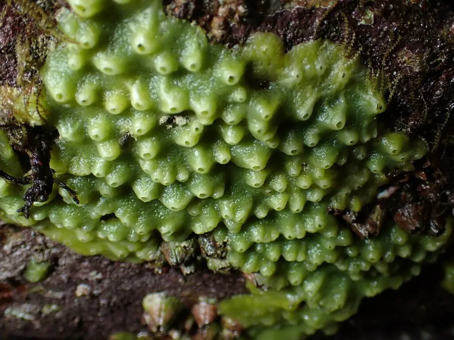

其他无脊椎动物 · 动物界
面包海绵 Halichondria panicea

体呈不规则块状、表面多孔如面包的海绵，栖于潮间带岩石与海藻间，滤食水中颗粒，颜色随光变化。
- 分类
- 门多孔动物门纲寻常海绵纲目软海绵目科软海绵科属软海绵属
- 栖息环境
- 潮间带至浅海岩石、海藻根部与水下洞穴
- 地理分布
- 北大西洋与北太平洋温带海岸
- 保护级别
- 常见种，无保护级别；水质污染与沉积物覆盖是威胁
物种志
面包海绵的群体呈不规则的块状或薄壳状，厚一至数厘米，表面布满小孔，质地松软易碎，形如一块粗糙的面包，面包海绵之名由此而来。颜色变化很大，向阳处常呈黄绿至亮绿色，阴暗处则呈橙黄、淡褐或灰白色，绿色来自共生的藻类，光照越足颜色越绿。
它分布于北大西洋和北太平洋的温带海岸，栖息在潮间带至浅海岩石、海藻根部和水下洞穴，常与其他海绵和苔藓虫混生。它靠体表的入水孔吸水，经内部领细胞滤食细菌和有机颗粒，出水孔把水排出。它雌雄同体，也可靠断裂碎片进行无性繁殖。它含有多种化学物质，是海洋天然产物研究的重要材料，对水质污染和沉积物覆盖较敏感。
形态与习性
- 形态不规则块状或薄壳状，厚一至数厘米
- 表面多孔，质地松软易碎如面包
- 颜色向阳处黄绿，阴暗处橙黄至灰白
- 食性滤食细菌与有机颗粒
- 繁殖雌雄同体，也可断裂碎片繁殖
- 价值含多种化学物质，供天然产物研究
趣味知识
- 按一下它像按面包，松软多孔，还会冒出水来。
- 向阳面的那层绿色是共生藻，光越足它就越绿。
- 它没有器官也没有神经，靠一进一出两股水流过日子。